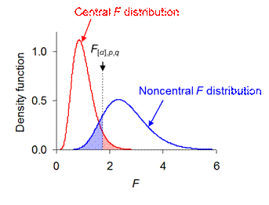

Statistical power: The probability of a statistical test detecting an effect if it truly occurs. A test with low probability of mistakenly accepting a false null hypothesis (i.e., a low 'Type-II error' rate, β) has a correspondingly high power (1 - β). Power increases with more replication. It should therefore be estimated prospectively, as part of the process of planning the design of data collection. For any balanced model, the power of the design to detect a real effect is completely described by the following six variables:
Power increases with α, p, q, n, θ, and decreases with σ. For all designs with a single variance component for the denominator MS, the effective sample size, n, is equal to the replication of random independent observations. This includes all fully randomized designs with fixed factors, and all Model-2 randomized complete-block designs. Other designs with random factors may have main effects or lower order interactions with fewer independent replicates, contributing to q, than the effective sample size n (due to the presence of more than one variance component in the model). For these designs, more replication does most to raise power when applied at an appropriate scale. For example a response measured per leaf for a treatment applied across replicate trees includes trees as a random factor nested in the treatment levels; for a given effective sample size n, the power of the design depends on its apportioning to trees per treatment level, defining q, rather than to leaves per tree.
Power estimation may require prior estimation of θ and/or σ from a pilot study. Values of the treatment and error mean squares, TMS and EMS, from pilot samples of size n will yield unbiased estimates of the treatment effect, θ = [(TMS - EMS)/n]1/2, and the random error effect, σ = (EMS)1/2. Data collection can then be planned to ensure sufficient replication to achieve a high power (e.g., 1 - β = 0.8) for distinguishing a real treatment effect (θ > 0) from the error effect (σ), or for detecting some specified minimum θ or θ/σ. Specifying a threshold effect size of interest has the desirable consequence that a non-significant effect can be deemed an uninteresting effect. A non-significant effect is otherwise difficult to interpret, even from a design planned for high power. It could result from there being no true effect (θ = 0); alternatively, it could result from θ having been overestimated in the power calculation used to plan the experimental design, which is consequently underpowered for detecting a small but real treatment effect.
The calculation of β, and hence power, is rather involved and may be best left to a computer package. For a fixed factor, it is the integral to critical F[α] of the density function for the noncentral F distribution:
where the noncentrality parameter , and the beta function . Figure 1 shows how the noncentral distribution is shifted
to the right of the central distribution, with the displacement being a
function of λ. Thus the power, 1 - β, of a given test increases with more
replication and a larger effect size, and decreases with larger error
variation.

Fig.
1. In the absence of a treatment effect, θ = 0, and F =
TMS/EMS follows the central F distribution, with α given by
the red-shaded area under its right-hand tail above the critical value F[α].
In the presence of a treatment effect, θ > 0, and F =
TMS/EMS follows the noncentral F distribution, with β given
by the blue-shaded area under its left-hand tail up to the critical value F[α].
This example yields power 1 - β = 0.86 for the B*A effect in
cross-factored and fully replicated model S΄(B|A) with a, b = 5 so p = 16, n = 5
so q = 100, θ/σ = 0.559 so λ = 25.0, α = 0.05 so F[0.05],16,100 = 1.75.
For a random factor, β is the integral to critical F[α] of the density function of the central F distribution with the variable F measured as a fraction of its expected value given the variance component θ 2, and error variation σ2:
The program Power.exe will estimate 1 - β for fixed or random terms in any balanced ANOVA with specified α and proposed sample size, n, and either an expected θ/σ or an observed F-value from a pilot-study. For a given n, it will also find the threshold θ/σ to achieve a target power. For any of the models described on these web pages, the program CritiF.exe will list for each fixed effect its threshold value of θ/σ for a power of 0.8 at α = 0.05, given specified sample sizes and levels of treatment factors. Both of these programs use a normal approximation of the non-central F distribution to estimate power to an accuracy of +/-0.01 The freeware Piface by Russell V. Lenth allows further explorations of the relationships between sample size, θ, σ and power for specified designs.
The program Performance.exe will calculate the performance of a balanced analysis of variance design relative to a reference design for the same treatment(s). The relative performance of the design is given by the fractional size of its error variance that will just match the power of the reference. The value of relative performance is robustly approximated by the ratio of reference to alternative α quantiles of the F distribution, multiplied by the ratio of alternative to reference effective sample sizes (Doncaster, Davey & Dixon 2014). By comparing the precision of two designs at equal sensitivity, relative performance provides a useful way to enumerate trade-offs between error variance and error degrees of freedom when considering whether to block random variation or to sample from a more or less restricted domain.
Doncaster, C. P., Davey, A. J. H. & Dixon, P. M. (2014) Prospective evaluation of designs for analysis of variance without knowledge of effect sizes. Environmental and Ecological Statistics, 21: 239-261. doi: 10.1007/s10651-013-0253-4.
Doncaster, C. P. & Davey, A. J. H. (2007) Analysis of Variance and Covariance: How to Choose and Construct Models for the Life Sciences. Cambridge: Cambridge University Press.
http://www.southampton.ac.uk/~cpd/anovas/datasets/